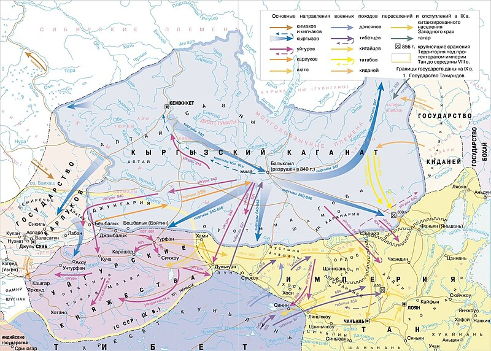
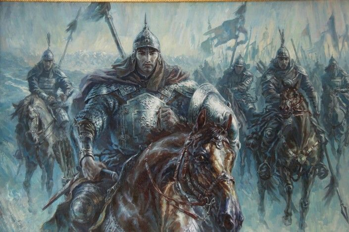

Эпос Манас
Три великие части: Манас, Семетей и Сейтек
Добро пожаловать в мир кыргызского героического эпоса
Манас
.png)
Манас — центральный герой одноименного кыргызского эпоса, объединивший разрозненные племена в единый народ. Его имя стало символом мужества, мудрости и справедливости.
Интересный факт
Эпос "Манас" включен в список шедевров устного и нематериального культурного наследия человечества ЮНЕСКО и является самым длинным эпосом в мире — его полная версия содержит более 500 тысяч строк.
Манас
Легендарный герой, объединитель кыргызских племен. С детства проявил необыкновенную силу и храбрость. Его имя означает "вечный", "бессмертный".

40 чоро
Легендарные воины Манаса, представлявшие разные племена: нойгут, катаган, кыпчак и другие.
Каныкей
Мудрая жена Манаса, ставшая символом женской мудрости и преданности в эпосе.
Исторический контекст
Манас родился в семье Жакыпа и Чыйырды после долгих лет ожидания наследника.
В 12 лет Манас уже возглавил войско и одержал первую победу над врагами.
Манас объединяет разрозненные кыргызские племена и создает Кыргызский каганат
Кыргызы под предводительством Манаса разгромили Уйгурский каганат
Расцвет Кыргызского каганата, территория от Енисея до Тянь-Шаня
Карта Кыргызского каганата
Семетей
.png)
Семетей — сын Манаса и Каныкей, продолжатель дела своего отца. Его история — это путь от изгнанника до мстителя и правителя.
Интересный факт
Когда Семетей подрос, он был в полном неведении о том, что Манас - его отец, Каныкей - мать, а Талас - его родина. В двенадцать лет он был буйным и дерзким мальчиком.
Семетей
Сын Манаса, выросший в изгнании. Вернулся, чтобы отомстить за смерть отца и восстановить справедливость. Его имя означает "несокрушимый".
Бакай
Верный соратник Манаса, ставший мудрым наставником Семетея. Бакай - один из немногих, кто знал правду о происхождении Семетея с самого начала
Айчурок
Возлюбленная и жена Семетея. Дочь мудрого старца Тайтору.
Канчоро и Кулчоро
Верные воины Семетея (чоро). Помогают Семетею в борьбе за справедливость.
Родился после смерти Манаса, воспитывался матерью Каныкей втайне от врагов.
Впервые проявил богатырскую силу, победив в схватке с диким быком, чем привлек внимание врагов отца.
Каныкей открыла ему правду о происхождении. Семетей поклялся отомстить за смерть отца.
Отправился в поход, чтобы собрать уцелевших соратников Манаса и вернуть родовые земли.
Восстановил ханство отца, женился на Айчурок, продолжил дело Манаса по объединению кыргызских племен.
Дочь мудрого старца Тайтору, стала верной спутницей Семетея. Их любовь - одна из самых поэтичных линий эпоса. От этого брака родился Сейтек.
Семетей не только отомстил за отца, но и сохранил его дело. Он воспитал достойного наследника - Сейтека, продолжившего традиции рода.
Сейтек
Сейтек — внук Манаса, сын Семетея и Айчурок. Его история завершает трилогию эпоса, показывая становление мудрого правителя.
Интересный факт
Имя "Сейтек" означает "избранный", "достойный". В эпосе подчеркивается, что он унаследовал лучшие качества своего деда Манаса и отца Семетея, но при этом был более дипломатичным и мудрым правителем.
Сейтек
Внук Манаса, завершивший дело своих предков. Объединил народ не только силой, но и мудростью. Его правление стало эпохой мира и процветания.
Родился в период междоусобиц после смерти Семетея.
Воспитывался вдали от родины, как и его отец, но узнал о своем происхождении раньше.
Стал мудрым правителем, объединившим народ и установившим долгий мир.